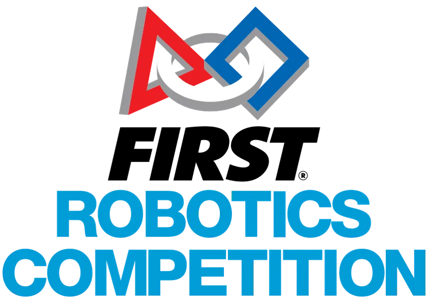

Physics graduate from the University of Toronto, proficient in deep learning, quantum computing, and robotics. I currently build systems that automate materials discovery for advanced manufacturing at Lawrence Livermore National Laboratory.
I work at the intersection of deep learning, computer vision, and scientific computing. My recent work includes deploying production vision models at Lawrence Livermore National Laboratory, designing robotics software for self-driving laboratories, and publishing first-author research on automated materials characterization. I'm drawn to problems where machine learning meets the physical world.
Working within the Materials Engineering Division (MED). Details to follow.
In ProgressProject APEX: Contributed to a self-driving laboratory for automated alloy discovery and manufacturing. Designed, trained, and deployed deep computer-vision models for high-throughput materials characterization. Curated and validated training datasets in collaboration with Cornell University.
Systems Design: Designed and implemented low-level software frameworks for robotics and tooling systems, integrated into high-level architectures using industry-standard design patterns for closed-loop automation. Additional details restricted under U.S. DOE regulations.
CV Design Challenge: Competed in a two-week computer vision challenge, designing generative decoding models capable of tracking occluded objects through walls using temporal feature representations.
Completed
Elected Mechanical Division Team Leader of a multi-school robotics club. During build season the team operated 6 days/week for months at a time. Off-season, led a subgroup that built an assistive robot with West Virginia University enabling non-ambulatory students to kick a soccer ball.
Competitions: Freshman year (2019) — FIRST World Championship Detroit Darwin Sub-Division (undefeated in qualifications, Semi-Finalist); FMA Bridgewater-Raritan District (Finalist); FMA Montgomery District (Semi-Finalist); FIRST Mid-Atlantic District Championship (Quarter-Finalist). Led the build team in designing and machining the full robot assembly in Autodesk Inventor CAD.
Community: During Covid, individually 3D-printed mask straps for local frontline workers, distributed club-wide. Mentored middle schoolers, hosted STEM events, and helped establish international FIRST clubs.
CompletedMinors in Computer Science and Mathematics. Coursework includes Quantum Information & Key Encryption. Developing a strong theoretical and computational foundation spanning physics, machine learning, and applied mathematics.
Clubs:
End-to-end computer-vision framework for automated materials surface quality assessment in self-driving laboratory environments. Includes custom architectures, training pipelines, statistical benchmarking, and uncertainty analysis for real-time feedback in accelerated materials discovery. First-author research manuscript currently under review.
University office hours queue management system built at the University of Toronto. Features dynamic wait-time estimation, structured question intake, thematic clustering via DBScan + SBERT embeddings, public queue visibility for passive learning, and hybrid in-person/remote support.
Group-oriented time management system designed to streamline task scheduling and coordination. Accounts for dynamic availability across multiple users, enabling efficient task assignment with minimal manual coordination.
C/C++ software layer on top of SDL2 for generating convincing retro graphics effects.
High-resolution, cross-platform time library for C/C++.
Unique super breakout game built for high school honours computer science.
Final project for Advanced Topics in Computer Science (high school), built during the 2021 cryptocurrency craze.
Research manuscript introducing a novel end-to-end computer-vision framework for automated materials surface quality assessment in self-driving laboratory environments. Presents custom vision architectures, dataset preprocessing, training pipelines, statistical benchmarking, and uncertainty analysis. Led model design, implementation, and evaluation. Imaging data from Cornell University; scientific validation with LLNL collaborators.
I'm always open to discussing research collaborations, engineering roles, or interesting problems. Feel free to reach out through any of the channels below.